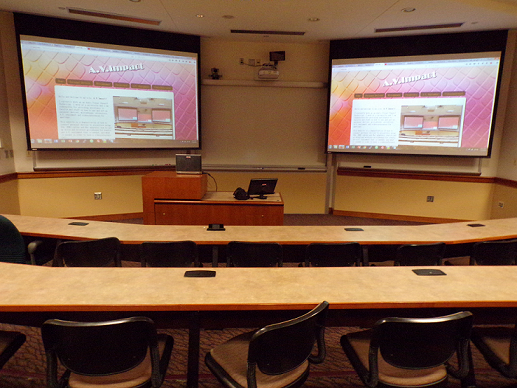

Welcome to my site A.V.Impact!
Hello! I'm Paulina and I currently work as an Audio Visual Support Technician. I work at a university and I am responsible for providing assistance to faculty and staff on how to use and set up personal devices, microphones, projectors, A.V. equipment and videoconferences for meetings, events and classes.

Each one of the classrooms is equipped with A.V. system. They all have a touch panel, desktop computer, control processor, matrix switch, microphone receiver, transceiver, HDMI interface, projectors and built-in cameras.
As I install, set up and replace all of this equipment, this website will only focus on:
- How I connect personal devices to projectors
- How I set up wired and wireless microphones
- List of external A.V. equipment I use to make wonders with technology
- What I use for a videoconference call